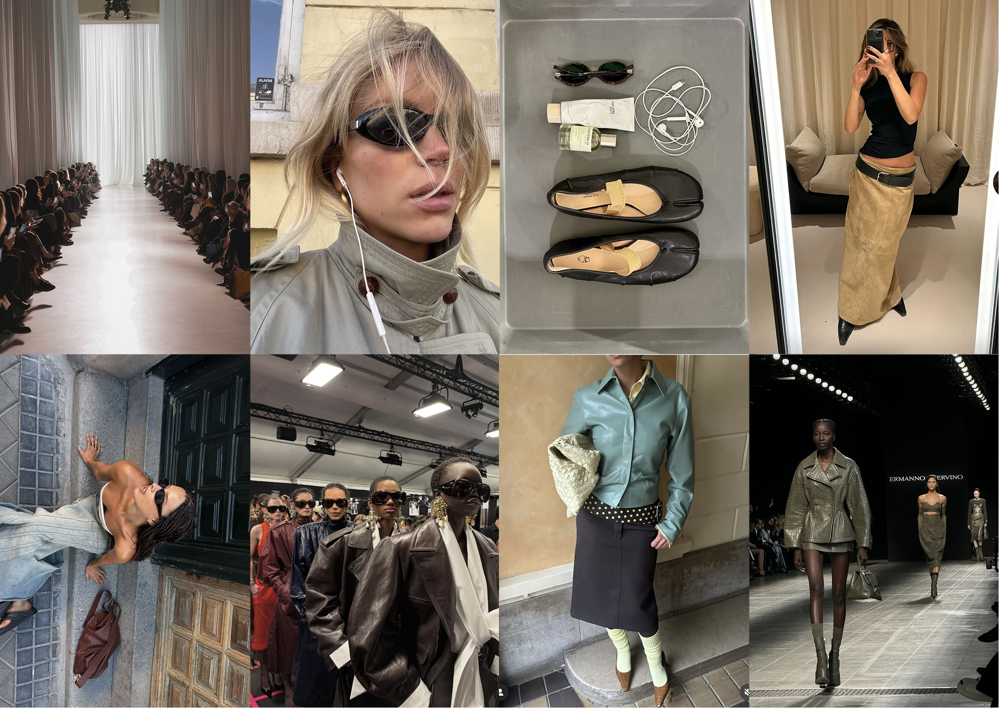

ФОТОСТИЛЬ
Фотостиль «Вешалки» строится вокруг ощущения живой, естественной и ненарочитой эстетики. Визуальный контент не должен выглядеть слишком постановочно, глянцево или чрезмерно обработанно.
Основу визуального языка составляют фотографии, которые передают атмосферу момента, повседневность и ощущение реальной жизни. Это могут быть кадры, снятые на телефон, backstage-фотографии, зеркальные селфи, детали образов, предметная съёмка или фрагменты городской среды.

Живые кадры
Допустимы:
- неидеальная композиция;
- лёгкое размытие;
- естественный свет;
- кадры «на ходу»;
- непостановочные позы.
Минимальная обработка
Не рекомендуется:
- чрезмерная ретушь;
- сильное сглаживание кожи;
- агрессивная цветокоррекция;
- перенасыщенные цвета;
- слишком контрастная обработка.
Повседневная эстетика
Это может быть:
- детали гардероба;
- личные вещи;
- кадры из города;
- backstage;
- фрагменты показов;
- рабочие процессы;
- фотографии, сделанные инфлюенсерами или авторами контента.